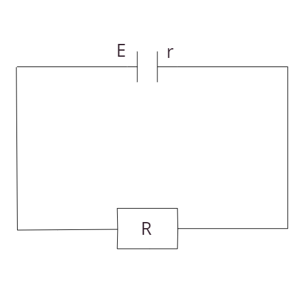

00 Индекс
Эта страница - заготовка под ответы по ОП.02 "Электротехника и электроника"
Сделанные темы:
| 1 | 2 | 3 | 4 | 5 | 6 | 7 | 8 | 9 | 10 |
| + | + | + | + | ||||||
| 11 | 12 | 13 | 14 | 15 | 16 | 17 | 18 | 19 | 20 |
| + | + | ||||||||
| 21 | 22 | 23 | 24 | 25 | 26 | 27 | 28 | 29 | 30 |
| 31 | 32 | 33 | 34 | 35 | 36 | 37 | 38 | 39 | 40 |
| 41 | 42 | ||||||||
1-10
01 Электрическое поле. Свойства электрического поля.
Электрическое поле(э.п.) это особая форма материи, которое создаётся электрическими зарядами, т.е. заряженными телами и которую можно обнаружить по взаимодействию электрических зарядов.
Свойства э.п.:- Оно материально т.е. существует независимо от нас и наших знаниях о нём.
- Оно создаётся эл. зарядами.
- Оно обнаруживается по взаимодействию электрических зарядов.
- Оно действует на э.з. с некоторой силой.
- Э.п. непосредственно невидимо, но может наблюдаться по его действию и с помощью приборов.
- Э.п. является 1 из составляющих единого электромагнитного поля с проявлением электромагнитного воздействия.
- Для количественного определения э.п. вводится силовая характеристика, напряжённость э.п. называется физическую величину = отношению силы с которой поле действует на + пробный заряд помещённый в данную точку пространства к величине этого заряда, напр. э.п. – это векторная физическая величина, направление вектора совпадает в каждой точке пространство с направлением силы действующей на + пробный заряд.
Вектор Е = вектор F / q. - Энергетическое характеристикой поля является потенциал. Физическую величину = отношению потенциальной энергии электрического заряда в электростатическом поле к величине этого заряда называют потенциалом э.п.
φ=Wg/g. В международной системе СИ: 1ВТ=1Дж/К
02 Закон Кулона.
Закон Кулона количественно описывает взаимодействие заряженных тел, он является фундаментальным законом, т.е. установлен при помощи эксперимента и не следует не из кого другого закона природы, он сформулирован для не подвижных точечных зарядов в вакууме в реальности точечности зарядов не существует, но таким можно считать заряды, размеры которых значительно меньше зарядов между ними.
Электрический заряд это физическая величина характеризующая св-во частиц или тел вступать электромагнитные силовые взаимодействия, впервые закон взаимодействия неподвижных зарядов был открыт французским физиком Кулоном в 1785г. В опытах Кулона измерялось взаимодействие между шариками размеры, которых много меньше расстояния между ними, такие заряженные тела принято называть тотечными зарядами на основании многочисленных опытов Кулон установил следующий закон: сила взаимодействия 2 неподвижных точечных электрических зарядов в вакууме прямопропорционально произведению их модулей и обратнопропорционально квадрата расстояния между ними. F=k=((q1)*(q2))/r2
(q1),(q2) - модули зарядов;r - расстояние между зарядами;
k – коэффициент пропорциональности;
k=1/4пEo следовательно F=(q1)*(q2)/4ПEor2
Eo – электрическая постоянная = -8,85*10-12
K=9*109
Из этого всего можно сделать следующие выводы:
- Существует 2 рода электрических зарядов условно называемых + и -.
- Заряды могут передоваться от 1 тела к другому в отличие от т тела электрич. Зар. Не является не отъемлимой данного тела, т.е. одно и тоже тело в разных условиях может иметь разный разряд.
- Одноимённые заряды отталкиваются, разноимённые притягиваются взаимодействия неподвижных электрических зарядов называют электрическим или Кулоновским взаимодействием, закон Кулона справедлив для точечных заряженных тел, чтобы выполнялся закон Кулона 3 условия:
- Точечность зарядов;
- Неподвижность зарядов;
- Взаимодействие зарядов в вакууме.
Кулон заряд проходящий за 1 секунду через поперечное сечение проводника при силе тока 1 Ампер.
03 Электростатическое поле.
04 Электрическое напряжение.
0506 Проводники в электрическом поле.
В экзаменационных вопросах ошибка. Один и тот же билет написан дважды.07 Полупроводники в электрическом поле.
08 Электроемкость. Конденсатор.
Электроёмкостью системы из 2х проводников наз. физ.величина, определяемая как отношения заряда q одного из проводников к разности потенциалов между ними:
C = q/∆φ [Ф] - фарад.Величина C зависит от формы и размеров проводников и от свойств диэлектрика, разделяющего проводники.

Существуют такие конфигурации проводников, при к.т. электрическое поле оказывается сосредоточенным лишь в некоторой области пространства.
Конденсатор это система, состоящая из двух или более проводников. Обозначается буквой C.
Плоский конденсатор две параллельные металлические пластины (обкладки), между которыми находится диэлектрик.
09 Последовательное и параллельное соединение конденсаторов.
Изображение взято из источника: fizmat.by
Для достижения нужной ёмкости или при напряжении, превышающем номинальное, конденсаторы могут соединяться последовательно или параллельно.
При последовательном соединении конденсаторы подключают таким образом, что только первый и последний конденсатор подключен к источнику тока одной из своих пластин. Заряд одинаков на всех пластинах.
10 Электрический ток в проводниках.
11-20
11 Сила тока.
12 Электрическая цепь.
13 Электродвижущая сила (ЭДС).
14 Электрическое сопротивление.
15 Соединение резисторов.
16 Закон Ома.
Открыт в результате экспериментов Георга Ома с гальванометром и простой электрической цепью из источника ЭДС и сопротивления.
Для широкого класса проводников при неизменной температуре справедлив закон Ома для участка цепи:
Сила тока I прямопропорциональна приложенному напряжению U и обратно пропорциональна сопротивлению проводника.
I = U/R; I = I*R; R = U/I.
Закон Ома для полной цепи:
Любой источник тока обладаем своим сопротивлением, которое называется внутренним сопротивлением источника. Таким образом, источник тока имеет 2 важные характеристики: ЭДС и внутреннее сопротивление.
Пусть ист. тока ЭДС E и внутреннее сопротивление r подключены к резистору R, к.т. в данном случае называется внешним резистором или внешней нагрузкой. Всё вместе это называется полной цепью.
Закон Ома для полной цепи устанавливает зависимость силы тока I в замкнутой цепи от ЭДС источника и полного сопротивления цепи:
I = E/R+rСила тока I в замкнутой цепи измеряется тношением ЭДС источника тока, имеющегося в этойцепи к полному её сопротивлению.
17 Законы Кирхгофа.
В сложных электрических цепях, т.е. где имеется несколько разнообразных ответвлений и несколько источников ЭДС имеет место и сложное распределение токов, однако при известных величинах всех ЖДС и сопротивлении резистивных элементов цепи, мы можем вычислить значение этих токов и их направление в любом контуре цепи с помощью первого и второго закона Кирхгофа.
I закон имеет две формулировки: 1)Сумма всех токов, втекающих в узел = сумме всех токов вытекающих из узла.
2)
Алгебраическая сумма всех токов в узле = 0
I1 = I2 + I3;
I1 - I2 - I3 = 0.
"+" - втекающий ток;
"-" - вытекающий ток.
II закон Кирхгофа
Алгебраическая сумма ЭДС действующих в замкнутом контуре = алгебраической сумме падений напряжений на всех резистивных элементах в этом контуре
Величина ЭДС и величина падений напряжений на этих элементах может быть как со знаком "+", так и со знаком "-".